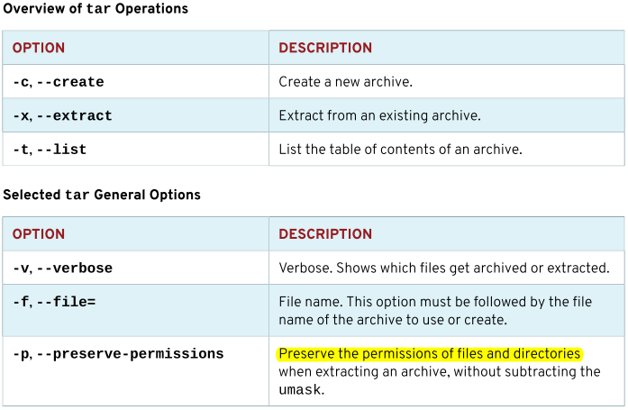

第十三章 归档与传输文件
目标：
- 将文件归档，并将文件从一个系统复制到另一个系统。
章节：
- 管理压缩的tar归档
- 在系统间安全地传输文件
- 在系统间安全地同步文件
第一节：管理压缩的tar归档
目标：
- 完成本节后，学生应该能使用tar将文件和目录归档到压缩文件中，还能提取现有
tar存档的内容。
tar命令：
- 创建备份和通过网络传输数据时，归档和压缩文件非常有用，最常用的命令是tar。
- tar命令支持文件归档和gzip、bzip2或xz的压缩与解压缩。
所选的tar选项：
- 选项如下所示：


列出tar命令选项：
- tar命令需要以下三个选项之一：
1. -c 或 --create 选项：创建归档
2. -t 或 --list 选项：列出归档的内容
3. -x 或 --extract 选项：提取归档
4. -f 或 --file= 选项：指定归档的文件名
5. -v 或 --verbose 选项：查看添加到归档中或从中提取的文件信息
- tar命令可使用忽略"-"的选项，或带有"-"的选项。
归档文件与目录：
- $ tar -cf <archive_name>.tar <filename1> ... <filenameN>：将多个文件归档
- $ tar -cf <archive_name>.tar /path/of/directory：将目录归档
- $ tar -rf <archive_name>.tar <filename>：追加文件至归档中


* 注意：
1. tar命令在当前工作目录中覆盖已存在的归档没有任何警告信息。
2. 使用绝对路径名归档文件时，将默认从文件名中删除该路径中的前面的 / 符号。
删除路径中的前导 / 可帮助用户在提取存档时避免覆盖重要文件。
tar命令相对于当前的工作目录提取文件。

3. 部分高级权限如ACLs和SELinux上下文不会自动存储到tar归档中。

4. 可使用 --xattrs 选项指定扩展属性。
列出归档的内容：
- $ tar -tf <archive_name>.tar：列出归档文件的内容

从归档中提取文件：
- 当root提取归档时，tar命令会保留文件的原始用户和组所有权。
- 如果普通用户使用tar命令提取文件，文件所有权将属于从归档中提取文件的用户。

创建压缩归档：
- 压缩比率：xz > bzip2 > gzip
- tar命令支持三种压缩方式。
- gzip压缩速度最快，历史最久，使用也最为广泛，能够跨发行版，甚至跨平台使用。
- bzip2压缩创建的归档文件通常比gzip创建的文件小，但可用性不如gzip广泛。
- xz压缩方式相对较新，通常提供最佳的压缩率。
- 使用下列选项之一来创建压缩的tar归档:
1. -z 或 --gzip：gzip压缩（文件后缀 .tar.gz 或 .tgz）
2. -j 或 --bzip2：bzip2压缩（文件后缀 .tar.bz2）
3. -J 或 -xz：xz压缩（文件后缀 .tar.xz）
- $ tar -zcf <archive_compressed_name>.tar.gz /path/of/directory
# 创建gzip压缩的归档文件

- $ tar -jcf <archive_compressed_name>.tar.bz2 /path/of/directory
# 创建bzip2压缩的归档文件

- $ tar -Jcf <archive_compressed_name>.tar.xz /path/of/directory
# 创建xz压缩的归档文件

- $ tar -tf <archive_compressed_name>.tar.gz：查看压缩的归档文件中文件信息
* 注意：
$ gzip <archive_name>.tar
$ bzip2 <archive_name>.tar
$ xz <archive_name>.tar
$ gunzip <archive_compressed_name>.tar.gz
$ bunzip2 <archive_compressed_name>.tar.bz2
$ unxz <archive_compressed_name>.tar.xz
提取压缩的归档：
- $ tar -zxf <archive_compressed_name>.tar.gz：解压gzip归档文件至当前目录中
- $ tar -jxf <archive_compressed_name>.tar.bz2：解压bzip2归档文件至当前目录中
- $ tar -Jxf <archive_compressed_name>.tar.xz：解压xz归档文件至当前目录中
- $ tar -zxvf <archive_compressed_name>.tar.gz -C /path/of/destination/directory
# 解压gzip归档文件至目标目录中
* 注意：
1. 不同版本的Linux发行版中解压归档文件使用的tar命令可能存在差异而报错！
2. RHEL 7与SLES 12 SP3之间的解压归档文件将出现报错。
练习 P454：MANAGING COMPRESSED TAR ARCHIVES
第二节：在系统间安全地传输文件
目标：
- 完成本节后，学生应该能通过SSH与远程系统安全地来回传输文件。
使用SECURE COPY拷贝文件：
- Secure Copy命令scp是OpenSSH套件（openssh-clients）的一部分，可将文件从
远程系统复制到本地系统或从本地系统复制到远程系统。
- 此命令利用SSH服务器进行身份验证，并在数据传输之前对其进行加密。
- 本地与远程服务器之间传输文件：


- scp命令传输目录使用 -r 选项：

使用安全文件传输程序传输文件：
- sftp类似于FTP软件的操作，但是传输基于SSH身份验证和加密，保证传输安全。

- 完成连接后，可以使用ls、cd、mkdir、rmdir、pwd、put、get命令控制文件系统。
- exit命令退出sftp会话。


* 注意：
1. sftp服务为SSH服务子系统，且默认开启。

2. 在sftp会话中获取帮助：

练习 P459：TRANSFERRING FILES BETWEEN SYSTEMS SECURELY
第三节：在系统间安全地同步文件
目标：
- 完成本节后，学生应该能高效而安全地将本地文件或目录的内容与远程服务器上的副本进行同步。
使用rsync同步文件与目录：
- rsync命令是在系统之间安全复制文件的另一种方式。
- 此工具采用的算法可通过仅同步已更改的文件部分来将复制的数据量最小化。
- rsync命令将仅复制文件系统间的差异部分（增量备份），而scp命令复制所有内容（全量备份）。
- rsync命令的重要选项:
-n, --dry-run 干运行（模拟运行），显示需要同步的文件清单，而不是真正同步。
-v, --verbose 查看命令运行详细信息
-a, --archive 归档模式，相当于 -rlptgoD（不包括-H、-A、-X）。
-H, --hard-links 保留文件硬链接
-A, --acls 保留ACLs（高级权限）
-X, --xattrs 保留SELinux上下文


- rsync命令可同步本地系统的文件或目录。

- 使用rsync命令同步远程系统上的文件或目录。


* 注意：
1. 为rsync命令输入源目录时，目录名称中是否存在尾随斜杠至关重要。
它将决定同步到目标中的是目录还是仅目录中的内容。
2. Tab补全可自动在目录名称中添加尾随斜杠。
练习 P465：SYNCHRONIZING FILES BETWEEN SYSTEMS SECURELY
Lab P467：ARCHIVING AND TRANSFERRING FILES